Library
Everything currently on the bench — open a card for the full story, screenshots, and links.
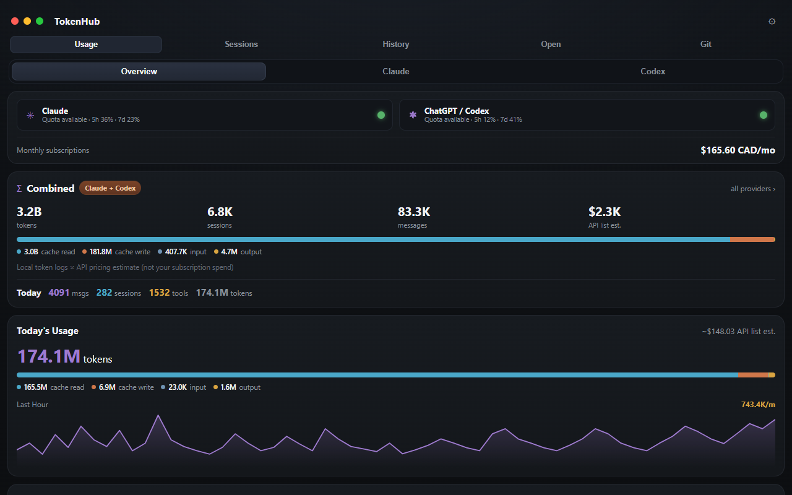
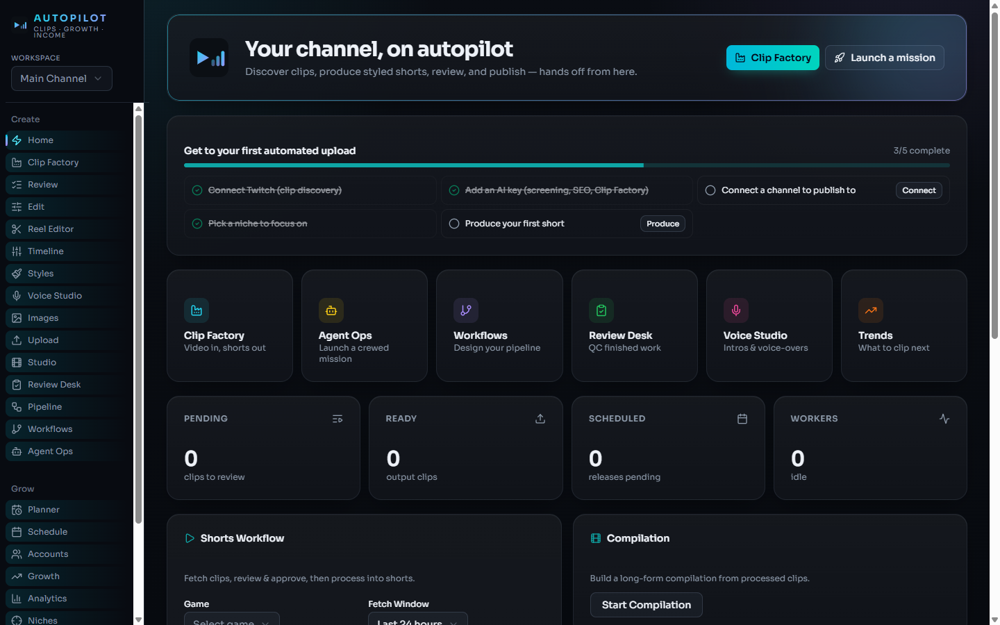
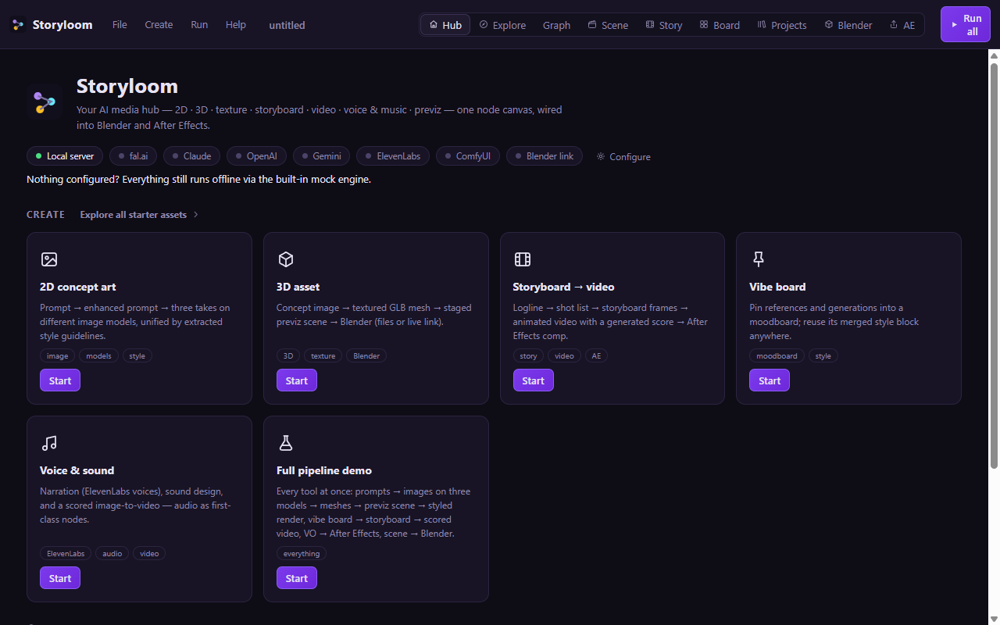
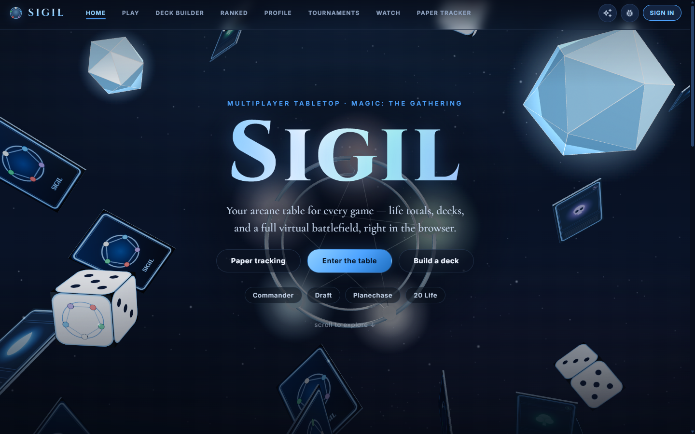
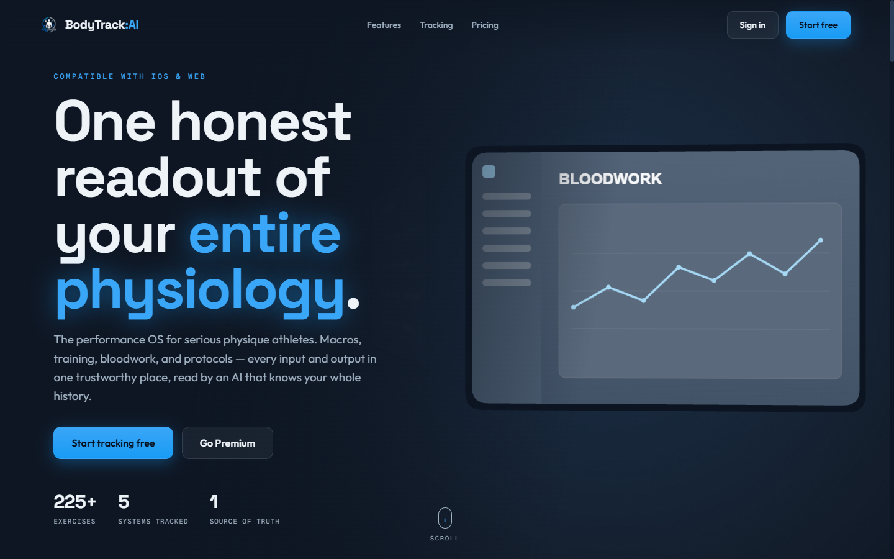
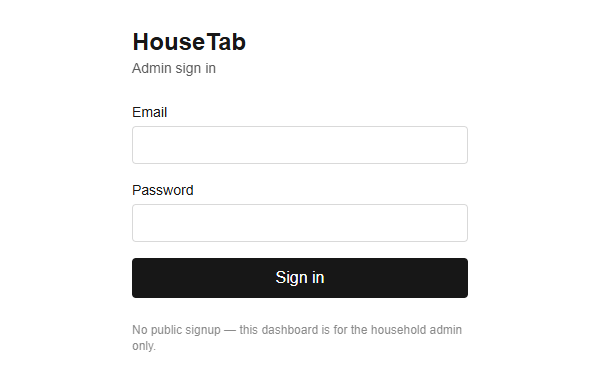
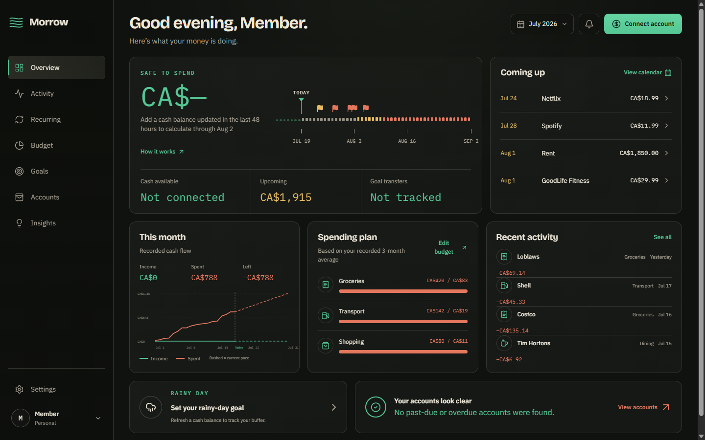
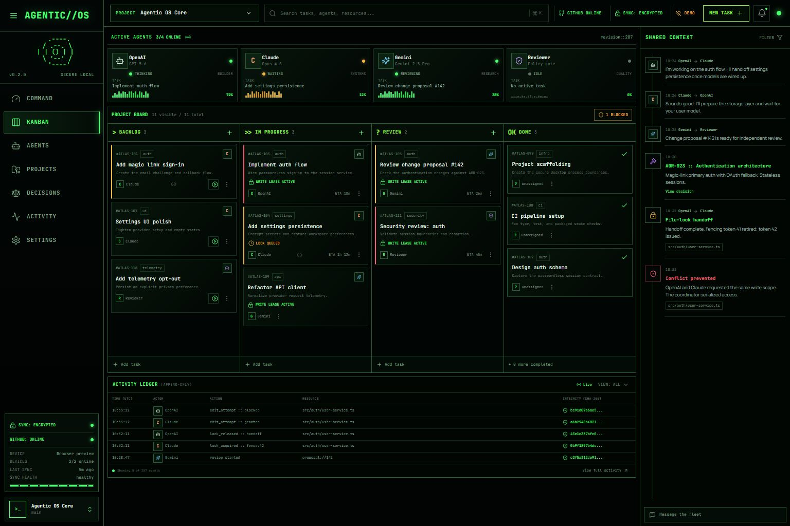
Shipped · Windows · v0.1.0 · July 2026
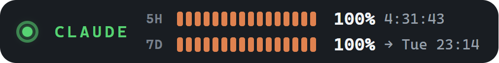
AI coding subscriptions enforce rolling 5-hour and 7-day limits, and the only way to check them is to ask the CLI — usually right after it cuts you off. TokenHub keeps both windows, for both providers, docked on the taskbar: exact percentages, reset countdowns, and a status light showing whether your agent is working, waiting on you, or stopped.
Behind the mini-bar: usage analytics (tokens, sessions, cost estimates, 14-day trends), live session cards, per-project history, and a git dashboard covering local repos and connected GitHub accounts. 100% local — nothing leaves the machine.
Rust · Tauri · WebView2
Active · open source
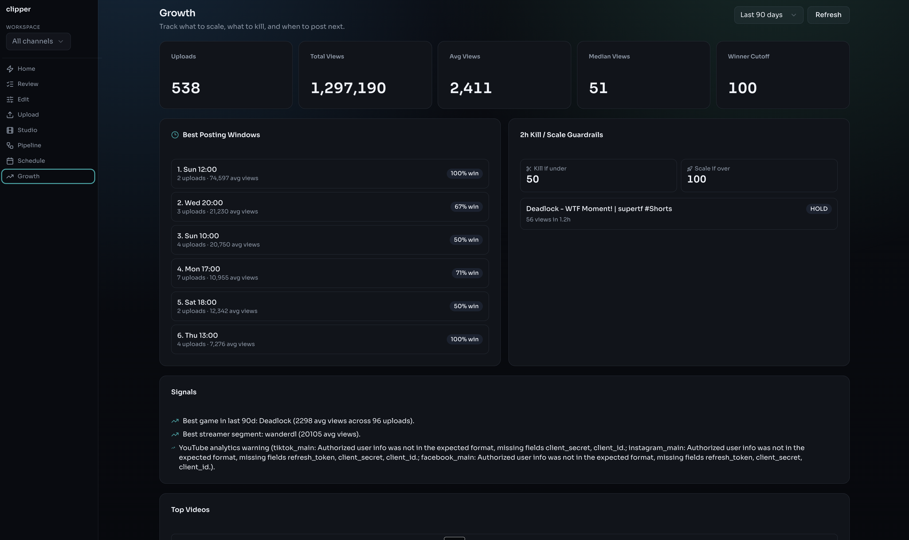
A fully automated short-form content pipeline: it discovers top Twitch clips, scores them by view velocity and audio quality, reformats to 9:16 vertical with facecam auto-detection, burns word-level karaoke subtitles, and publishes across YouTube, Instagram, TikTok, and Facebook on a schedule — zero manual input.
Ported from an open-source macOS pipeline and rebuilt for Windows, then extended well past the original: a visual workflow builder, an agentic mission system, style cloning from example reels, a Clip Factory that turns any long-form URL into captioned shorts, and a multitrack timeline editor for re-cuts.
Python · FastAPI · React · FFmpeg · Whisper
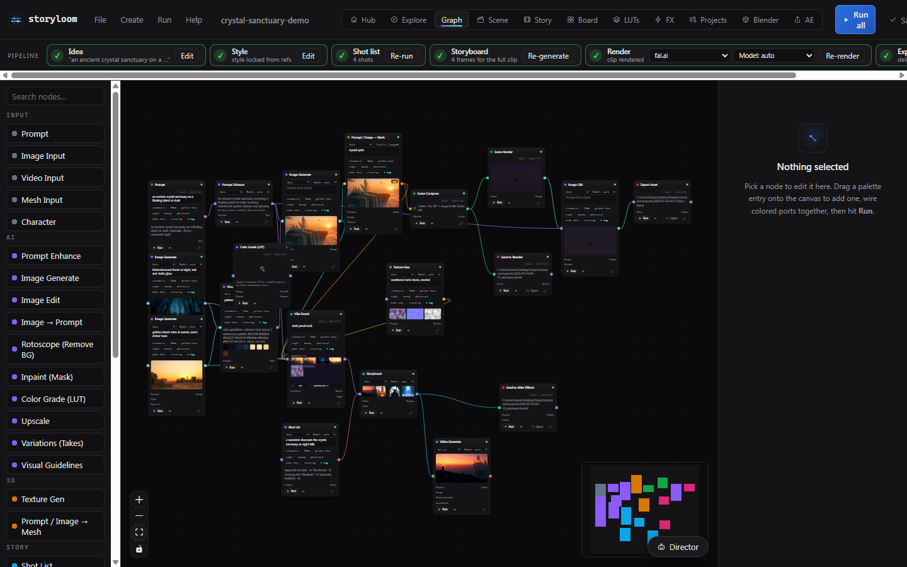
An AI media hub built around a node canvas: prompts flow through a graph and come out as concept art, textures, GLB meshes, storyboards, and scored previz video. A live TCP bridge syncs scenes straight into Blender, and a dockable panel connects After Effects.
The whole pipeline runs offline through a built-in mock engine — procedural art, PBR materials, real meshes, WebGL renders — and switches to fal.ai, OpenAI, Gemini, Anthropic, and ElevenLabs when keys are added. Recent additions: a DCC-style scene editor with cameras, layers, and numeric transforms, plus a storefront of starter asset packs.
React · Vite · React Flow · Three.js · Express
Playable · open source
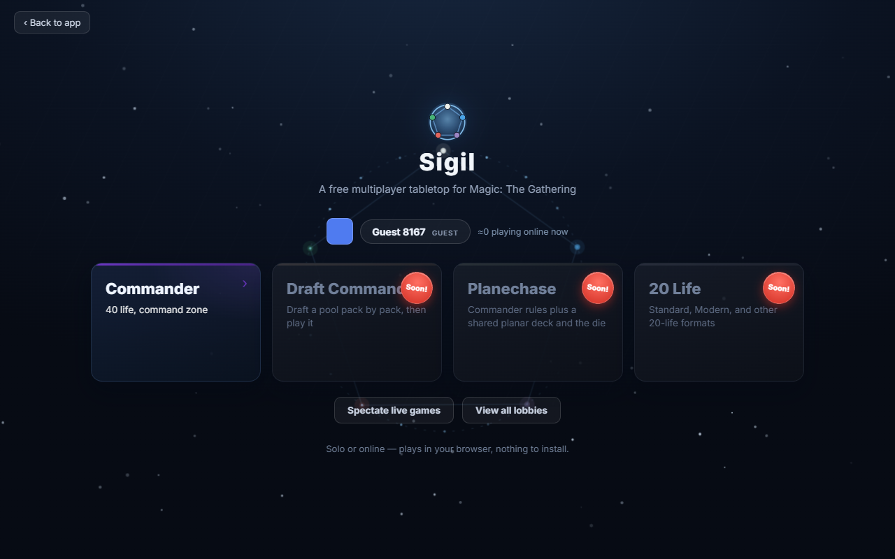
A virtual tabletop for Magic: The Gathering that runs from a single index.html — no build step. Solo goldfishing, hotseat pods of four, and online multiplayer where the server is the source of truth: hidden zones sit behind Postgres row-level security, so an opponent's hand is hidden by the database, not the client.
Ships with deck import from Moxfield, Archidekt, and MTGA, automatic card art from Scryfall, commander damage tracking, Planechase, draft mode, and an undo system built on a pure reducer with exact action inversion.
Vanilla JS · Supabase Realtime · Postgres RLS
In development · open source
One Next.js codebase that ships to the web and to a Capacitor-wrapped iOS app — identical UI, the same Supabase backend, accounts and data syncing everywhere.
Tracks nutrition and macros, workouts and lift progression, body measurements, bloodwork, steps, hydration, sleep, and compound protocols with dose tracking — per-user isolation enforced by Postgres row-level security.
Next.js · Supabase · Capacitor · TanStack Query
One roommate pays the landlord; HouseTab keeps everyone square. The admin logs each bill, a Telegram bot posts the monthly breakdown to the house group chat, and roommates tap “I've sent my e-transfer” — the message updates live with who has paid.
It never moves money; it only tracks declarations of payment. Runs on Vercel Hobby + Supabase + the free Bot API for $0–10 a month, with daily reminder crons.
Next.js 15 · Supabase · Telegram Bot API · Vercel Cron
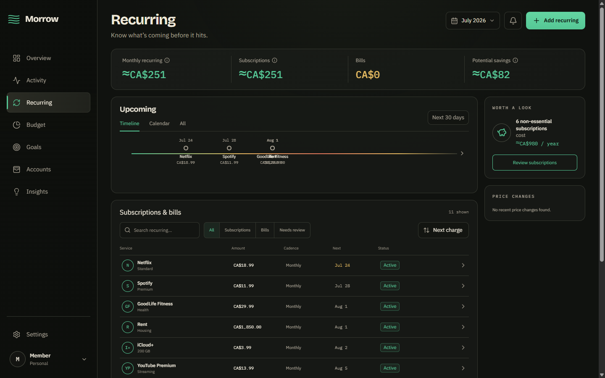
A calm personal-finance SaaS: spending, recurring charges, budgets, goals, accounts, investments, and an explainable Safe to Spend estimate in one place. Safe to Spend is withheld unless a cash balance was seen in the last 48 hours — the app would rather say nothing than guess.
Two deliberate deployment modes: fully local (zero credentials, JSON persistence, CSV import, the complete product UI) or SaaS — Supabase Auth/Postgres tenancy, Stripe Billing, and consent-based Canadian bank sync through Plaid with AES-sealed tokens. Production fails closed unless the data mode is explicit.
Next.js · Supabase · Stripe · Plaid
v0.3.0 · open source
A local-first Windows desktop command center for coordinating several frontier-model agents on one project: a Kanban task surface, active-agent visibility, durable messages and decisions, and a GitHub-backed project catalog — wrapped in a near-black, phosphor-green terminal theme.
The coordination kernel is the interesting part: reproducible context packs for every run, atomic resource leases with fencing tokens so agents can't clobber each other, an append-only hash-chained SQLite journal, and encrypted (AES-256-GCM) profile sync so a second machine can adopt the same setup through a private repo.
Electron · TypeScript · React · SQLite